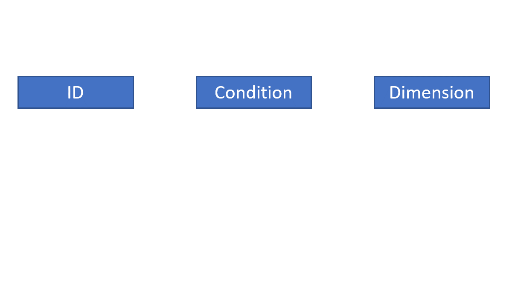
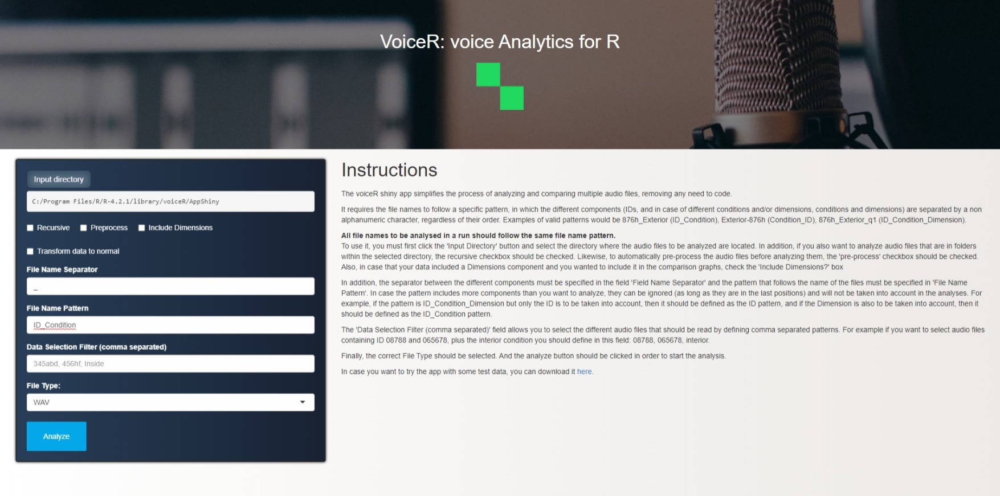

install.packages("voiceR")The subtleties of our speech often unveil more about us than the mere words we utter. These subtleties can be quantified through a constellation of distinct vocal features. Together, these features offer a glimpse into an individual’s speech pattern, revealing a trove of information. Within each individual’s unique vocal features lies valuable insights into their personal traits, such as age and gender, as well as their current emotional state. Furthermore, they have been linked to broader evaluative outcomes, including perceptions of physical attractiveness and strength. In medical contexts, these features have proven diagnostic, aiding in studying speech pathologies like vocal loading and enabling the detection of conditions such as Parkinson’s disease. Additionally, they have been instrumental in predicting and monitoring the treatment of clinical depression.
While technically oriented fields like computer science, with their cadre of adept researchers, swiftly embraced and expanded the realm of voice analytics—utilizing deep learning models to dynamically recognize discrete human emotions—less technically inclined disciplines recognized the potential of voice analytics but fell short in harnessing its vast capabilities. These disciplines acknowledged but did not fully exploit the power of voice analytics to describe, comprehend, and predict affective and cognitive aspects of human expression.
To bridge this gap and offer a practical interface for voice analytics, we have developed an R package aiming at making voice analytics more accessible: the voiceR package, which today has been published to CRAN.

What is voiceR?
voiceR is an R package specifically designed to streamline and automate voice analytics for social science research. This package simplifies the entire process, from data processing and extraction to analysis and reporting of voice recording data in the behavioral and social sciences. It provides an intuitive and user-friendly interface, including an interactive Shiny app, making it accessible for researchers. One of its key features is batch processing, enabling the simultaneous reading and analysis of multiple voice files. Moreover, voiceR automates the extraction of crucial vocal features, facilitating further in-depth analysis. Notably, it goes a step further by automatically generating APA-formatted reports tailored for typical between-group comparisons in experimental social science research. Figure 1 offers a video summary of voiceR’s key features.
voiceR prerequisites
Installing voiceR
Getting started with voiceR is a straightforward process. Begin by installing the package from CRAN using the following command:
Once you’ve successfully installed the package, you’re ready to embark on your voice analytics journey using voiceR.
Required file name structure
voiceR relies on a specific file naming convention to ensure seamless processing of audio files. This convention is comprised of up to three components of metadata about the file, two of which are optional:
ID: A unique identifier for the speaker or recording.
Condition (optional): The experimental condition or another grouping variable.
Dimension (optional): Additional survey or experiment information, such as additional conditions.
The different file name components should be separated by a non-alphanumeric character, such as an underscore (_).
voiceR extracts these components to provide additional information about the audios and enable comparisons between groups.
Order of the components is not important, as long as you identify the correct file name pattern structure. For example, the following file names are all valid:
12345_happy_male.wav(ID_Condition_Dimension)123bcf.wav(ID)CovidPositive_Patient1.wav(Condition_ID)
Using the Null placeholder
If there are parts of the file name that are not any of the required components, you can use the Null placeholder to avoid them. For example, if you have additional information in the file name that does not belong to any of the categories that voiceR processes, you can use the Null placeholder to ignore that information.
For example, imagine you have a file named Audio_Participant345_Happy.wav. The Audio component of the file name is not required, so you could define the following pattern: Null_ID_Condition. This file name would still be valid, and voiceR would ignore the first component given that we used the Null placeholder.
Figure 2 demonstrates how the voiceR package uses the name pattern structure to identify the different components.

Comprehensive functionality
voiceR offers a suite of functions designed to simplify the voice analytics process. These functions cover reading and preprocessing audio files, automatic feature extraction, visualization of results, and even automatic report generation.
Reading multiple audio files
The initial step in the audio analytics process involves reading designated audio files. The readAudio() function in the voiceR package achieves this seamlessly, systematically processing all audio files in a specified directory and its subdirectories if specified. Users can customize this function by providing a file path (path) and an optional character vector to filter for specific patterns (filter). Upon execution, this function efficiently imports audio files into R, generating a comprehensive list of Wave objects, each representing an imported audio file.
Preprocessing multiple audio files
Following successful import, preprocessing becomes imperative. The preprocess() function in voiceR automates this process by normalizing amplitude and eliminating background noise from a list of Wave objects (audioList). Two optional logical parameters, normalizeAmplitude and removeNoise, allow users to tailor the preprocessing scope. Default settings include both amplitude normalization and noise removal. While suitable for most scenarios, advanced users can integrate functions from other packages, such as tuneR’s extractWave(), for more intricate preprocessing. The output is a preprocessed list of Wave objects, which can be stored locally using the saveAudio() function.
Automatic feature extraction for multiple audio files
The pivotal autoExtract() function facilitates the extraction of vocal features from raw or preprocessed audio files. Operating in two modes, it can either automatically read and analyze audio files based on a specified path and optional patterns or analyze a pre-existing list of audio files in the R environment. The function produces a table containing key audio features for each analyzed file, such as duration, voice breaks percentage, amplitude envelope root mean square, average loudness, average pitch, pitch standard deviation, average entropy, and average Harmonics to Noise Ratio.
Visualizing results
Given the wealth of information produced by autoExtract(), effective visualization is paramount. The voiceR package offers two specialized functions for this purpose:
normalityPlots(): Generates density plots for each audio feature, facilitating normality assessment through the Shapiro-Wilk test.comparisonPlots(): Produces box plots, aiding in the comparison of audio features across different conditions or dimensions. These plots include relevant statistical tests based on data normality.
These visualization functions, seamlessly integrated into the voiceR package, enhance the interpretability of audio data, enriching the depth and breadth of analysis.
Automatic Report Generation
Despite the automation provided by voiceR functions, thorough documentation of primary findings remains essential. The autoReport() function addresses this need by utilizing autoExtract() output to generate an HTML report. This report encapsulates key vocal features of the analyzed audio files, including density plots, box plots, and automatically generated APA-formatted text and tables, highlighting differences between conditions or dimensions.
Explore the voiceR Shiny App
For the ultimate user-friendly experience, voiceR offers the voiceRApp() function. By invoking this function, you can launch the voiceR Shiny app, simplifying the selection and subsequent analysis of multiple audio files. It provides a dynamic view of results and the ability to download a comprehensive report summarizing key findings. Figure 3 provides a snapshot of the voiceR app’s initial screen.

Dive Deeper into voiceR
For a detailed understanding of voiceR’s capabilities and functionalities, consult the package documentation here.